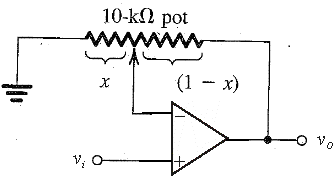
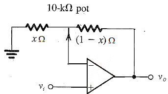
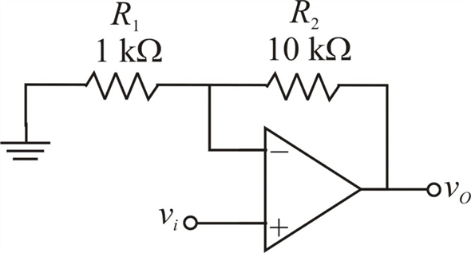

Step 1:
The adjustable gain operational amplifier circuit is

Figure 1
Step 2:
Redraw the circuit as shown in Figure 2.

Figure 2
Step 3:
The relation of the gain of the operational amplifier, with the connected resistors is given by
, ……. (1)
where are the resistors connected to the output and input of the terminals of an operational amplifier.
Consider the circuit shown in Figure 2.
The output resistance is
 ,
,
And the input resistance is,
.
Substitute the values of the resistances, in equation (1) we et
Step 4:
The minimum gain is 1.
Therefore,
Step 5:
Assume that the operational amplifier to be ideal, the value of x lies between 0 and 1, that is,.
The range of the gain of the operational amplifier is given by
Thus the range of the gain of the operational amplifier is
.
Step 6:
The gain of the amplifier is,
Thus the resistor value is .
Step 7:
Draw the operational amplifier circuit with fixed resistor as shown in Figure 3.

Figure 3